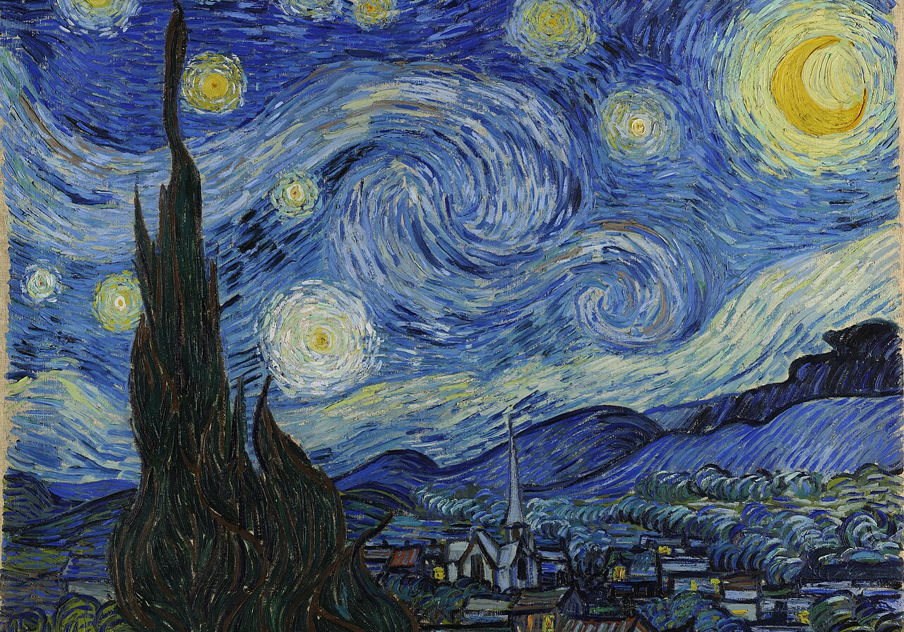
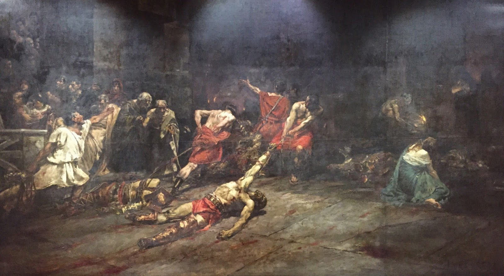

Open Exhibits
mouse
Left click and drag to rotate the camera
keyboard_arrow_up
Arrow keys to rotate around the object
keyboard_arrow_right
Shift + Arrow keys to move the camera
Exhibits
X
Mona Lisa

Starry Night

Spoliarium